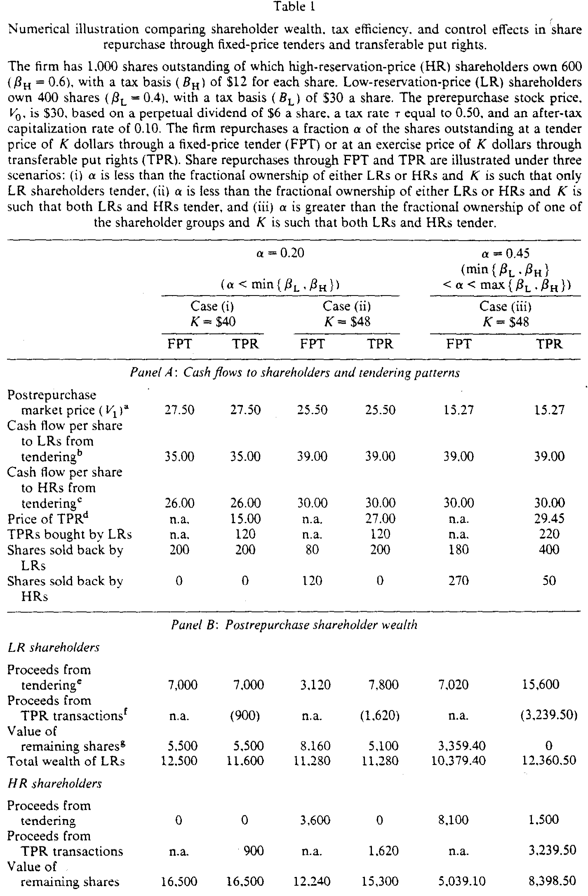
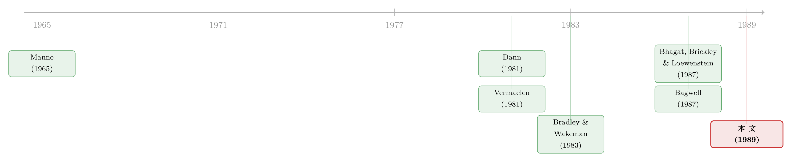

把藏在要约里的那张看跌期权，拿出来卖
本文读的是 Kale, Noe & Gay (1989, Journal of Financial Economics)：当一家公司用「可转让看跌权」(transferable put rights, TPR) 而不是传统的固定价格要约来回购股票时，它其实是把要约里那个原本无法交易的看跌期权摆上了货架——结果是，按比例配售 (proration) 的风险被消除，留下来的股东从离场者手里分到了好处，而且只有计税基础最高的股东会真正卖股，从而省下了一笔税。
1 一个被所有人忽略的期权
先讲一个公司金融里几乎人人都见过、却很少有人盯着看的细节。
一家公司宣布要花钱回购自己 10% 的股票，开出一个高于市价的固定价格——这就是我们熟悉的 固定价格要约回购 (fixed-price tender offer, FPT)。教科书会告诉你：要约价里有溢价，溢价是信号，是把现金还给股东的方式。
但如果你换一个角度，把这件事看成一份合约，你会发现：公司其实是给每一个股东都派发了一份看跌期权。在要约有效期内，你有权（但没有义务）以那个固定价格把股票卖回给公司。要卖、还是不卖，是你自己的事。这正是一份美式看跌期权的形状——只不过，它没法转让。你手里这份「卖回去的权利」，要么自己用掉，要么白白浪费，没法卖给别人。
Kale、Noe 和 Gay 的这篇 1989 年的论文，整篇就在追问一件事：如果把这份藏在要约里的看跌期权变得可以交易，会发生什么？
答案听上去几乎像一句废话——「会产生交易的好处」。但真正有意思的，是这份好处具体落到了谁头上、为什么、以及它顺手解决了固定价格要约的哪几道老毛病。
2 固定价格要约的两道暗伤
要理解 TPR 好在哪，得先看清它要替代的东西坏在哪。
固定价格要约只有两种结局。
第一种，认购不足 (undersubscribed)：愿意卖的股票数少于公司想买的数。这时公司必须把所有递交的股票照单全收，而那个高于市价的溢价，全被选择离场的股东拿走了。换句话说，留下来的股东，替离场者付了这笔溢价——这是一笔从「留守者」到「离场者」的财富转移。
第二种，认购过度，触发按比例配售 (proration)：愿意卖的股票数超过了公司想买的数，于是公司从每个递交者手里按同一比例买一部分。问题来了——proration 不挑人。它会同时从低计税基础和高计税基础的股东手里买股。
为什么这是个问题？因为如果股东之间的差异来自计税基础 (tax basis) 的不同，那么 proration 就埋下了一处税收上的浪费：一些计税基础较低、因而卖股要交更多税的股东，反而先于那些基础高、卖股几乎不用交税的股东被买走了。从全体股东的总税负看，这是把钱交给了国税局却没必要。
而且，proration 还废掉了管理层的另一个动机：按比例买回时，忠诚股东和潜在的「叛徒」被同等对待，公司在阻吓敌意收购上一无所获。
把这两道暗伤记牢：溢价的泄漏（认购不足时财富流向离场者）与 税收的浪费 + 控制权的落空（按比例配售时）。TPR 的全部价值，几乎都是冲着这两件事来的。
3 把权利拿出来卖
TPR 的机制简单到近乎朴素。
公司不再直接出价，而是按持股比例给每个股东派发看跌权：想回购 α 比例的股票，就给每股派 α 份 TPR。每一份 TPR，是「以固定行权价 K 把一股卖回给公司」的权利。
关键的两条规则是：
- 凡是被 put 回来的股票，公司全部接收——于是 proration 的风险被彻底消除了。
- 不想卖股的股东，可以把手里的 TPR 拿到公开市场上卖掉。
第二条才是这篇论文的灵魂。一旦 TPR 可以转让，那些「不想卖股、但手里有这份权利」的股东，就可以把权利变现；而那些「很想多卖、但手里 TPR 不够」的股东，就可以去市场上买。当股东对「卖回股票这件事」估值不一时，让这份权利流通起来，就会产生交易的收益 (gains from trade)。
接着，一个自然的问题是：股东对「卖回股票」的估值，为什么会不一样？
4 模型：把「卖不卖」写成一个保留价格
论文的内核，是一个极简的均衡模型。我们一步步把它推出来。
考虑一家全股权公司，每年派发永续股利 D，以税后资本化率 r 折现。资本利得税与普通所得税税率相同，记为 T。
第一步，写出一个股东的两个选择。 若他在市场上以价格 P 卖掉一股，税后现金流是 P - T(P - B)，整理得 (1-T)P + TB，其中 B 是他这股的计税基础 (tax basis)。若他不卖，继续持有，这股对他的价值是税后股利的资本化：
$$ V_0 = \frac{(1-T)D}{r}. $$
第二步，找他的临界点。 让他「卖」与「不卖」恰好无差异的那个价格，就是他愿意出手的最低价，即他的保留价格 (reservation price) P。它解 (1-T)P + TB = V_0，于是：
$$ P = \frac{V_0 - TB}{1-T}. \tag{1} $$
读懂式 (1) 只要记住一件事：P 与计税基础 B 负相关。基础越低，卖股要补的税越多，他张口要的价就越高。
第三步，引入两类股东。 设两组人除计税基础外完全相同：高保留价组 (HR) 基础为 B_H，低保留价组 (LR) 基础为 B_L，且 B_H < B_L。代入式 (1)，基础低的 HR 反而保留价高（P_H = P(B_H) 大），基础高的 LR 保留价低（P_L = P(B_L) 小）。管理层知道场上有这两组人，却不知道各自持有多少股。
直觉到此已经成形：LR 这组人计税基础高、卖股几乎不用交税，所以他们对「卖回股票的权利」估值最高；HR 则相反。这份权利对 LR 比对 HR 更值钱——一旦让它能交易，HR 就该把 TPR 卖给 LR，让真正最该卖的人去卖。固定价格要约做不到这种「按估值分拣」，TPR 可以。
5 给那张可转让的权利定价
现在给 TPR 标个价。
回购后的每股价值。 若回购成功，公司花掉 αNK 现金买回 αN 股，剩下的价值摊到剩余股票上：
$$ V_1 = \frac{N V_0 - \alpha N K}{N - \alpha N} = \frac{V_0 - \alpha K}{1-\alpha}. \tag{2} $$
TPR 的均衡价格。 价格 p 要让边际投资者「买一份 TPR 再去行权」的利润恰好为零。他付 K 行权、花 p 买权利，税后该等于继续持有的价值 V_1：
$$ (1-T)K + TB_i - (1-T)p = V_1, \tag{3} $$
其中 B_i（i = H 或 L）是边际投资者的计税基础。解出 p，就得到这篇论文最核心的那一个方程：
式 (4) 把整套逻辑压进了一行：谁是边际投资者，谁的计税基础就钉住了 TPR 的价格；而 TPR 的价格一旦定下，非边际的那一组人，就能靠买进或卖出 TPR 赚到剩余的好处。
这里有一个漂亮的反转：
- 当回购规模不大、要约价不至于触发 proration 时，LR 永远是边际买家。于是 TPR 的价格被钉在让 LR 不亏不赚的水平，好处全归卖掉权利的 HR——也就是那些留下来的股东。
- 当回购规模大到 LR 的股票不够卖、必须有 HR 也来卖时，HR 变成边际方，好处反而归 LR。
换句话说，剩余的税收红利，总是被「不在边际上」的那一组人收走。
6 三个场景，一张表算到底
论文用一组校准数字把上面的全部抽象落了地。设 N=1000 股，HR 持 600 股（β_H=0.6，基础 B_H=$12），LR 持 400 股（β_L=0.4，基础 B_L=$30）；T=0.5，永续股利 $6，资本化率 0.10。于是回购前股价 V_0 = 6(1-0.5)/0.10 = $30，由式 (1) 算得 P_H=$48、P_L=$30。
作者挑了三个场景对照固定价格要约 (FPT) 与 TPR：
- 场景 (i)：
α=0.20，K=$40。K不够高，FPT 下只有 LR 会递交，proration 不会发生。 - 场景 (ii)：
α=0.20，K=$48。K高到两组都想递交，FPT 触发 proration。 - 场景 (iii)：
α=0.45，K=$48。回购量超过 LR 的全部持股，必须有 HR 来卖。

Table 1
把表里的关键数字读出来：
回购后股价由式 (2) 分别为 $27.50 / $25.50 / $15.27。TPR 价格由式 (4) 分别为 $15.00 / $27.00 / $29.45——注意场景 (iii) 用的是 HR 的基础 B_H 来定价，因为这时边际方是 HR。
再看税收效率收益 (tax efficiency gain)，即 TPR 相对 FPT 的全体股东总财富之差：
- 场景 (i)：$0。
K不高、不触发 proration，两种方式都只让 LR 卖股，税负相同。但 TPR 仍然把财富从 LR 转移给了 HR：HR 财富从$16,500升到$17,400（+$900），LR 从$12,500降到$11,600（−$900）。没有税收红利，却有再分配——因为在 FPT 里，递交者可以「白嫖」超出自己应得份额的卖股权利，而在 TPR 里他得为这份权利付钱。 - 场景 (ii)：$1,080。proration 一旦发生，TPR 就额外造出一块税收红利，全归非边际的 HR：HR 财富
$15,840 → $16,920，LR 维持$11,280不变。 - 场景 (iii)：$1,980。这次边际方换成 HR，红利全归 LR：LR 财富
$10,379.40 → $12,360.50，HR 几乎持平（$13,139.10 → $13,138）。
一句话收束这张表：TPR 在任何情形下都做再分配；而一旦 proration 本会发生，它还会凭空多造出一块税收效率红利。
7 控制权：被顺手收走的第二份红利
表 1 的 Panel C 藏着第二个故事。看回购后「忠诚股东（HR）占总股本的比例」：
| 场景 | 回购前 | FPT 后 | TPR 后 |
|---|---|---|---|
| (i) | 0.60 | 0.75 | 0.75 |
| (ii) | 0.60 | 0.60 | 0.75 |
| (iii) | 0.60 | 0.60 | 1.00 |
差别全在 proration 发生时。FPT 一旦按比例配售，HR 的占比纹丝不动（0.60），管理层在阻吓收购上毫无所获；而 TPR 下，HR 把权利卖给 LR、自己一股不卖，于是忠诚股东的占比被推高——场景 (iii) 甚至推到了 1.00，剩余股票全是 HR 持有。对一个想让公司「更难被外人买走」的管理层来说，这是一份不请自来的控制权红利。
而且作者点出一层管理层动机：既然留下来的股东决定着经理未来的薪酬，经理本就有动机把好处导向这些留守股东——这恰恰是 TPR（相对 FPT）多做的那件事。从这个角度看，TPR 也可能是一种经理人自利的工具（关于回购背后的经理动机，可参见《当「回购」不再是回购：公司买回股票，到底为了谁？》）。
8 税法的细节，与 Gillette 的实战
模型之外，论文花了不少笔墨讲 TPR 在美国税法下的真实处理，这也是它区别于一篇纯理论文章的地方。
要点在于：国税局 (IRS) 把收到 TPR 视同收到一笔等于「派发日核定价值」的股利，无论你最终是放弃、卖出还是行权，都要先按普通所得纳税。更妙的是 TPR 绕开了 proration 的税务陷阱：按 IRS 规定，只有当投资者的持股比例下降时，递交所得才算资本利得，否则要按股利征税；持股比例下降达到 20% 即进入「绝对安全港」。在高度按比例配售的 FPT 里，投资者的持股比例几乎不变，可能被迫把所得当股利计税；而在 TPR 里，投资者可以主动安排，确保拿到资本利得待遇。
论文用 Gillette 1988 年的 TPR 做了脚注式的标定：每份 TPR 被核定价值 $10.8125，每持 7 股派一份，折成每股约 $1.54 的「股利」，收益率约 4%——而通常被视为最适合「股利捕获」(dividend capture) 策略的公用事业股，季度股利也不过股价的 1.5% 左右。正文随后用 Gillette 在一场收购战中的 TPR 案例（论文第 4 节，配 Table 2）来印证这套机制在真实世界里如何运转。
我手头能精确核对的，是模型与表 1 的全部数字，以及第 2 节关于 Gillette 1988 年 TPR 的标定（$10.8125／每 7 股一份／约 4% 收益率）。第 4 节案例研究的细节因正文截断未能逐条核对，故此处只作定性描述，不臆造 Table 2 的具体数值。
9 文献脉络
把这篇论文放回它的坐标系，能看得更清楚。
源头是 Manne (1965) 立下的「公司控制权市场 (market for corporate control)」框架——收购的威胁，是约束管理层的一股外部力量。沿着这条线，一支研究开始系统地拆解股票回购：Dann (1981)、Masulis (1980)、Vermaelen (1981, 1984) 研究固定价格要约回购的价格效应与信号含义；与之并行，Bradley & Wakeman (1983)、Dann & DeAngelo (1983)、Mikkelson & Ruback (1985) 则盯住定向回购里的财富转移——谁拿走了溢价、谁付了账。

真正为本文铺路的，是两块拼图。其一，Bhagat、Brickley & Loewenstein (1987) 指出，要约本身就给了股东一份隐含的看跌期权——这正是本文「把期权拿出来卖」的起点。其二，Bagwell (1987) 把基于计税基础的股东异质性与回购、收购阻吓联系起来，论证了回购里证券的供给曲线是向上倾斜的；Bradley、Desai & Kim (1988) 也在这一点上提供了佐证。Kale、Noe & Gay (1989) 站在这两块拼图之上，做的事情很干净：把「隐含看跌期权」与「计税基础异质性」合到一起，证明让这份期权可转让，会同时改善税收效率、重新分配财富、并强化控制权。
至于回购的税收维度本身，则呼应着另一支文献（关于回购相对股利的个人税收优势，可参见《回购，是股东偷偷向政府借的一笔无息贷款》）。
评论与延伸（Q&A + 研究方向）
(a) 几个可能的疑问
Q：TPR 和普通的固定价格要约，差别到底是不是只在「可转让」三个字？
是的，而且这三个字是全部要害。固定价格要约里也隐含一份看跌期权，但它不可交易，于是「最该卖股的人」和「实际卖股的人」可能不是同一批；proration 更是把人不加区分地一锅端。TPR 唯一多做的，就是让这份权利流通，从而把卖股的资格精准分拣给计税基础最高的人，并消除 proration。
Q：模型假设资本利得税率与普通所得税率相等（都为 T），这会不会把结论做没了？
这是为了把税收效率的逻辑讲干净而做的简化。真实税法（第 2 节）要复杂得多——TPR 受让被视同股利、安全港规则、股利捕获等等。但作者明确指出，加进这些复杂性不会改变 TPR 相对 FPT 的相对税收效率，因为效率的来源是「让高基础者优先卖股」，与税率的绝对水平无关。
Q：所谓「税收效率收益」，到底是谁省下来的、又被谁拿走？
省下来的是全体股东对国税局的总税负——因为 TPR 保证了计税基础最高、卖股税负最低的 LR 先把股票全卖掉，避免了 proration 下「低基础者被先买走」的浪费。至于这块红利归谁，取决于谁在 TPR 定价上是边际方：边际方不赚不赔，非边际方收走全部剩余（场景 ii 归 HR，场景 iii 归 LR）。
Q：控制权红利是「真红利」还是会计幻觉？
它是实打实的持股结构变化：proration 下 FPT 让忠诚股东占比原地不动，TPR 却能把它从 0.60 推到 0.75 乃至 1.00。对一个面临收购威胁的管理层，留守股东比例越高，公司对袭击者越贵。但要注意，这份红利之所以「好」，是站在现任管理层和留守股东的立场上说的——对潜在收购者和想离场的股东，它未必是好事。
Q：那 TPR 是不是一种反收购工具？这对股东是好是坏？
论文的定位是中性偏正面：它强调 TPR 改善税收效率、并把好处导向留守股东，而留守股东决定经理薪酬，所以经理有动机选 TPR。但这也意味着 TPR 同时是一种把财富和控制权向「内部人友好方向」倾斜的安排——它的福利评价，取决于你站在收购威胁的哪一边。
Q：论文里有没有信息/信号效应？
没有。作者在数值分析里明确假设 TPR 与 FPT 都不带信息效应。他们也坦承：固定价格要约可能向市场释放有利信息，而 TPR 能否充当信号机制并不清楚。这正是模型最干净、也最该被后续实证检验的一处留白。
(b) 几个可能的研究问题与提案
1. TPR 公告的市场反应：信号那块留白能不能补上？
【经济故事】FPT 回购通常被读作利好信号，股价上涨。TPR 把看跌期权可转让化，理论上削弱了「我用真金白银买回自己股票」的承诺强度——那么市场对 TPR 公告的反应，会比 FPT 更弱、还是因为 proration 风险消除反而更强？ 【可行性】中。需要手工收集 1980 年代末至今为数不多的 TPR/tender-put 发行事件（Merrill Lynch 的 SHARPS、Morgan Stanley 的 Transferable Share Repurchase Rights），做配对的事件研究。难点在样本量小，识别只能靠与同期 FPT 的匹配对照，结论会偏描述性。
2. 计税基础异质性能否从 TPR 的市场价格里「反推」出来？
【经济故事】式 (4) 说 TPR 价格由边际投资者的计税基础钉住。反过来，如果能观察到 TPR 的市场成交价、行权价 K 与回购后股价，就能反解出边际股东的隐含计税基础——等于用市场价格给「股东税基分布」做了一次结构估计。 【可行性】低到中。需要 TPR 的二级市场逐笔报价，这类数据极其稀缺；即便拿到，还要对 V_1 的预期、税率结构做强假设。理论上漂亮，实操上 doable 存疑。
3. 把 TPR 的逻辑搬到公司债与信用市场：可转让的「卖回权」会怎样定价？
【经济故事】公司债里也有隐含的卖回权（putable bond 的回售条款）。如果把回售权做成可在债权人之间转让的凭证，会不会同样产生「按估值分拣 + 消除配售风险」的收益？不同持有人对回售的估值差异，可能来自税收，也可能来自流动性需求或久期偏好。 【可行性】中。可借助 TRACE 的公司债逐笔成交数据，识别带回售条款债券在临近回售窗口时的价格行为，与不可转让回售权的债券对照。识别策略类似事件研究 + 横截面比较；机制干净，数据可得，是相对 doable 的方向。
4. 外资持有人与「卖股资格分拣」：跨境税基差异下的回购机制设计
【经济故事】当股东里同时有本国和外国投资者时，两者面对的资本利得税待遇可能天差地别。TPR 这类「让权利可交易」的机制，会不会系统性地把卖股资格分拣给税负最轻的一方（往往是受税收协定保护的外资）？这等于把本文的税基异质性，换成了「居民身份异质性」。 【可行性】中到低。需要能识别股东居民构成的持股数据（如部分市场的外资持股披露），并找到采用差异化回购机制的样本。识别可行但数据约束很紧，更适合做单一市场的临床式研究。
我的判断
这篇论文最漂亮的地方，是它的「重新看见」：把一件公司金融里人人熟视无睹的事——固定价格要约——重新表述成「一份不可转让的看跌期权」，然后只动一个旋钮（让它可转让），就把三件看似无关的好处（消除 proration、再分配财富、改善税收效率）串成了同一条逻辑。模型极简却自洽，校准的三个场景把「谁是边际方、红利归谁」讲得一清二楚，是那种读完会拍一下脑门的理论小品。
但它的软肋也很清楚。第一，它是纯理论 + 单一案例（Gillette），没有横截面实证——TPR 在现实中是否真的改善了股东财富、改变了收购概率，论文给不出系统证据。第二，它主动关掉了信息效应这扇门，而回购最被关注的恰恰是信号含义；TPR 削弱了「真金白银买回」的承诺，它的信号价值到底是正是负，悬而未决。第三，控制权红利的福利符号是含糊的——同一个机制，对留守股东和经理是红利，对离场股东和潜在收购者可能是损失，论文没有从社会福利角度做净评价。
后续我最想看到的，是把第 9 节里那条「TPR 公告的市场反应」做实：哪怕样本很小，一个干净的事件研究也能告诉我们，市场究竟把 TPR 当成「更聪明的回购」，还是「更隐蔽的反收购防御」。而把这套「可转让权利」的思路移植到公司债的回售条款上，在我看来是它最被低估、也最 doable 的延伸。
参考文献
Bagwell, L. S. (1987). Share repurchase and takeover deterrence. Unpublished manuscript, Northwestern University.
Barclay, M., & Smith, C., Jr. (1988). Corporate payout policy: Cash dividends versus open-market repurchases. Journal of Financial Economics 22(1), 61–82.
Bhagat, S., Brickley, J., & Loewenstein, U. (1987). The pricing effects of interfirm cash tender offers. Journal of Finance 42(4), 965–986.
Bradley, M., Desai, A., & Kim, E. H. (1988). Synergistic gains from corporate acquisitions and their division between the stockholders of target and acquiring firms. Journal of Financial Economics 21(1), 3–40.
Bradley, M., & Wakeman, L. M. (1983). The wealth effects of targeted share repurchases. Journal of Financial Economics 11(1–4), 301–328.
Dann, L. Y. (1981). Common stock repurchases: An analysis of returns to bondholders and stockholders. Journal of Financial Economics 9(2), 113–138.
Dann, L. Y., & DeAngelo, H. (1983). Standstill agreements, privately negotiated stock repurchases, and the market for corporate control. Journal of Financial Economics 11(1–4), 275–300.
Kale, J. R., Noe, T. H., & Gay, G. D. (1989). Share repurchase through transferable put rights: Theory and case study. Journal of Financial Economics 25(1), 141–160.
Manne, H. G. (1965). Mergers and the market for corporate control. Journal of Political Economy 73(2), 110–120.
Masulis, R. W. (1980). Stock repurchase by tender offer: An analysis of the causes of common stock price changes. Journal of Finance 35(2), 305–321.
Mikkelson, W. H., & Ruback, R. S. (1985). An empirical analysis of the interfirm equity investment process. Journal of Financial Economics 14(4), 523–553.
Vermaelen, T. (1981). Common stock repurchases and market signalling: An empirical study. Journal of Financial Economics 9(2), 139–183.
Willens, R. (1988). The buyback binge. Investment Dealers' Digest (March 28), 54–57.